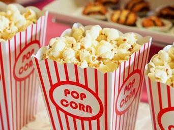

Movies
I like science fiction movies
like Jurssic Park.
TheChronicles of Narnia were also pretty good.
Top grossing movies of all time(Adjusted for inflation)
- Avator
- Titanic
- Star Wars: The Force Awakens
- Jurasic World
- The Avengers
Television
Dancing with the stars is a good show.
"Plus belle la vie" is another good show.
Poems
I like Emily Dickerson
“Hope” is the thing with feathers - That perches in the soul - And sings the tune without the words - And never stops - at all - And sweetest - in the Gale - is heard - And sore must be the storm - That could abash the little Bird That kept so many warm - I’ve heard it in the chillest land - And on the strangest Sea - Yet - never - in Extremity, It asked a crumb - of me.
Other Poets I Like
- Robert Frost
- Edgar Allen Poe
- William Wordsmith